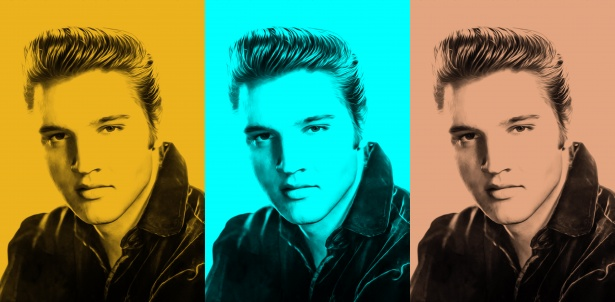

King of Rock and Roll
Born: January 8, 1935 Tupelo, Mississippi, U.S.
Died: August 16, 1977 (aged 42) Memphis, Tennessee, U.S.
Elvis Aaron Presley, also known mononymously as Elvis, was an American singer and actor. Known as the "King of Rock and Roll", he is regarded as one of the most significant cultural figures of the 20th century. Presley's energized interpretations of songs and sexually provocative performance style, combined with a singularly potent mix of influences across color lines during a transformative era in race relations, brought both great success and initial controversy.
Signature
Place ob birth
Elvis Aaron Presley was born in Tupelo, Mississippi, on January 8, 1935, to Vernon and Gladys Presley. Born in a two-room house built by his father, grandfather and uncle, Elvis was one of twin brothers born to the Presleys. His brother, Jessie Garon, was stillborn. Elvis grew up in Tupelo surrounded by his extended family including his grandparents, aunts, uncles and cousins. Financially, times were hard on Vernon and Gladys, and they had to move out of the house where Elvis was born when he was only a few years old for lack of payment. Vernon and Gladys worked various jobs while in Tupelo and moved several different times during the thirteen years they resided in Mississippi.
View Larger Map
Click to find out more information about his birthplace here
Fascinating Facts About Elvis
Check out some things you may not know about the iconic entertainer- Elvis had a twin
- Elvis bought Graceland when he was 22
- Elvis never performed outside of North America
On January 8, 1935, Elvis Aron (later spelled Aaron) Presley was born at his parents’ two-room house in East Tupelo, Mississippi, about 35 minutes after his identical twin brother, Jesse Garon, who was stillborn. The next day, Jesse was buried in an unmarked grave in nearby Priceville Cemetery.
In 1957, Elvis shelled out $102,500 for Graceland, the Memphis mansion that served as his home base for two decades. Situated on nearly 14 acres, it was built in 1939 by Dr. Thomas Moore and his wife Ruth on land that once was part of a 500-acre farm dubbed Graceland in honor of the original owner’s daughter, Grace, who was Ruth Moore’s great-aunt. The Moores’ white-columned home also came to be known as Graceland, and when Elvis purchased the place he kept the name.
An estimated 40 percent of Elvis’ music sales have been outside the United States; however, with the exception a handful of concerts he gave in Canada in 1957, he never performed on foreign soil. A number of sources have suggested that Elvis’ manager, Colonel Parker, turned down lucrative offers for the singer to perform abroad because Parker was an undocumented immigrant and feared he wouldn’t be allowed back into the U.S. if he traveled overseas.
The 3 Best Elvis Presley Songs
- “Suspicious Minds”
- “If I Can Dream”
- “In the Ghetto”
Elvis was just two years into his marriage with Priscilla when he recorded "Suspicious Minds," but things were already falling apart. It's clear he poured some of that disappointment, particularly over his own failings as a husband, into the song. Written by Mark James, it became his first Number One hit in seven years and was a regular highlight of his live show.
Just two months after Martin Luther King Jr. was assassinated, Elvis Presley stepped into the Western Recorders studio and laid down this moving tribute to the civil rights hero. It was the stirring climax to his 1968 comeback special, and he belted it out with incredible passion. The song rose to Number 12 on the Hot 100, and today many see it as one of the greatest vocal performances of his career.
Elvis spent much of the 1960s churning out cheesy B-movies and lifeless soundtracks while new acts like the Beatles and Bob Dylan made him seem like a relic. His brilliant 1968 comeback special shot him back to the forefront, and he took his newfound energy into the studio to cut "In the Ghetto." It's a song about the vicious cycle of poverty and despair in America's inner-cities, and it eventually hit Number Three, cementing the fact that Elvis was back.
Find out more